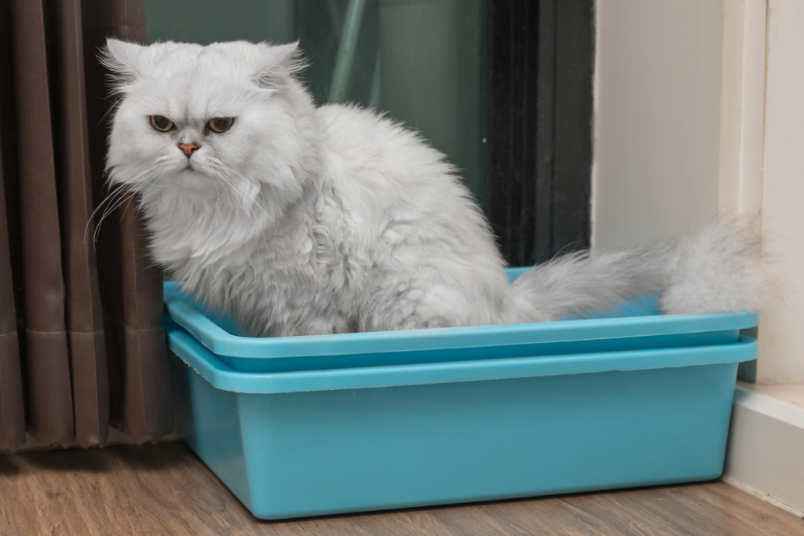
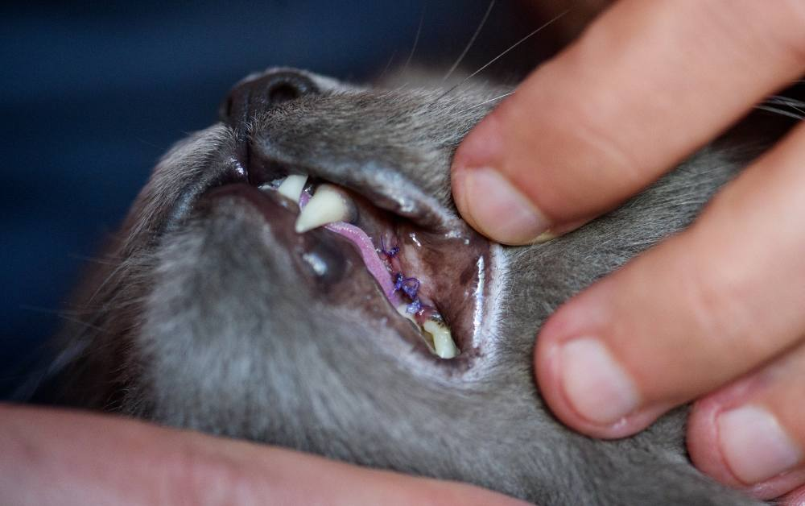
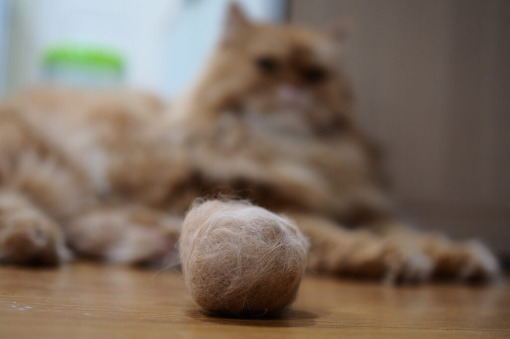

고양이 방광염
고양이 방광염은 방광 점막에 염증이 생기는 질환. 통증을 동반하며 소변 배출에 어려움을 겪게 한다. 단순 염증 외에도 요로 결석, 세균 감염, 혹은 특발성 원인 등 다양한 요소로 인해 발생할 수 있다.
방광염 주요 원인
- 스트레스
- 수분 섭취 부족
- 요로 결석
- 세균 감염

고양이가 아플 때 보이는 행동
- 잦은 구토와 지속적인 설사 - 위장관염, 식중독, 기생충 감염 등의 원인 가능
- 식욕 변화 - 갑상선 기능 항진증, 스트레스성 과식, 당뇨병 초기 등의 원인 가능
- 이상 호흡(헐떡거림) - 심각한 스트레스, 고온환경, 심장 또는 폐 기능 이상

고양이 구강 질환
- 구내염 – 잇몸, 혀, 입천장, 목구멍 부위의 점막에 염증이 광범위하게 생기는 만성 질환
- 치은염 – 잇몸에 염증이 생기는 질환으로, 구내염과 함께 자주 나타나며 잇몸이 붓고 피가 나거나 통증을 유발
- 만성 치주염 – 치은염이 악화되어 치아 주변 조직까지 염증이 퍼진 상태로, 치아 흔들림이나 치아 탈락의 원인이 됩니다
- 구내궤양, 인후염, 후두염 등 – 입안 점막이 헐거나 목 안쪽까지 염증이 확산된 상태로, 통증과 침흘림, 삼킴 곤란 등의 증상을 동반합니다.

고양이 헤어볼 토 반복
헤어볼(hairball)은 고양이가 그루밍하면서 삼킨 털이 위장에 쌓여 생기는 털 뭉치입니다. 고양이는 천성적으로 스스로 털을 핥아 관리하기 때문에, 털을 어느 정도 삼키는 건 자연스러운 현상이에요. 하지만 일정량 이상 쌓이게 되면 소화기관을 자극해 토하게 됩니다. 바로 이것이 고양이 헤어볼 토의 주요 원인이에요.
헤어볼 토하는 이유
- 과도한 그루밍
- 계절적 요인 - 털 빠짐의 증가
- 운동량 부족 - 장 운동의 둔화로 털 배출되지 않음